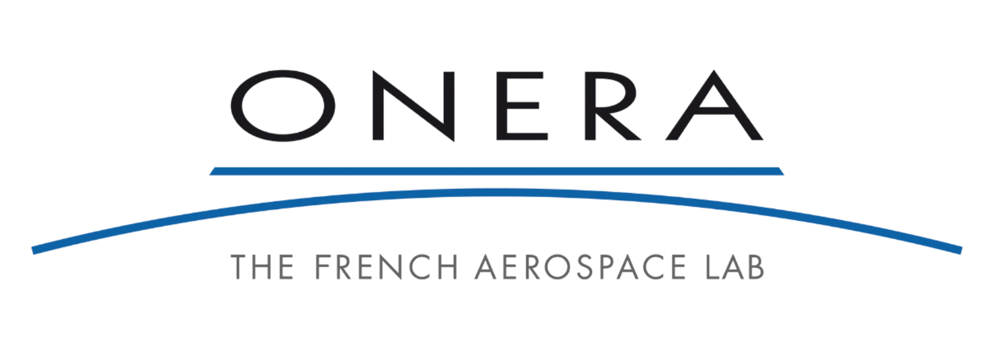
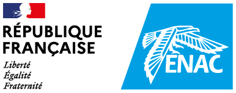
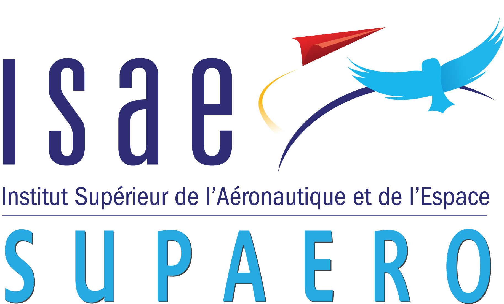
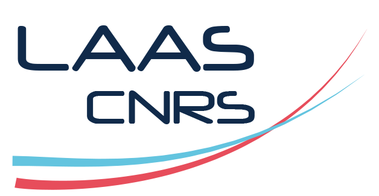

Recherche et animation scientifique autour de l’intelligence artificielle embarquée à Toulouse




Le défi "Embarquabilité de l'IA" s’inscrit dans le cadre de l'institut ANITI de Toulouse et de la chaire CertifEmbAI – Certification of Machine Learning-based Systems. Le défi réunit les chercheurs toulousains du LAAS, du IRIT, de l’ENAC, de l’ISAE, de l’ONERA et d’autres établissements, tous engagés dans les travaux autour de l’IA embarquée.
Liste de diffusion :
Pour vous inscrire ou diffuser une information, envoyez un email à :
defi-ia-embarque@groupes.renater.fr